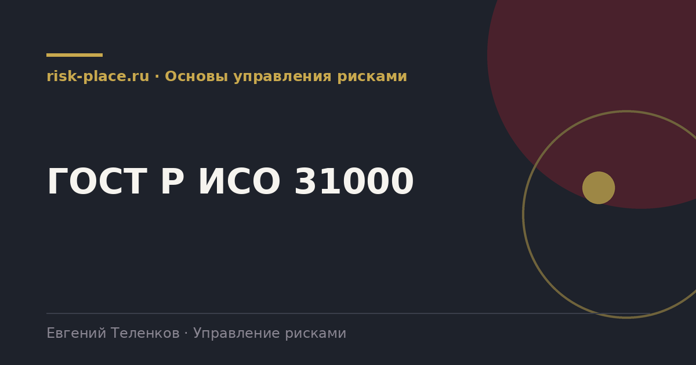

risk-
risk-Принципы
- Каким должно быть управление риском, чтобы приносить пользу. Восемь характеристик, от интегрированности в деятельность до способности к улучшению
Главная · Библиотека · Основы управления рисками · ГОСТ Р ИСО 31000
Библиотека · Основы управления рисками
Стандарт короткий, около двадцати страниц, и почти весь состоит из здравого смысла. Разбираем его по частям и показываем, что из него обычно теряется.

ГОСТ Р ИСО 31000 – 2019 «Менеджмент риска. Принципы и руководство» это российская версия международного стандарта ISO 31000:2018, принятая идентично. Он не отраслевой и не обязательный, это рамка, которую компания настраивает под себя.
Важно понимать, чем он не является. Это не стандарт на сертификацию, по нему нельзя сертифицировать систему управления рисками, в отличие от ИСО 22301 по непрерывности. И это не методика оценки, методы вынесены в отдельный документ, ГОСТ Р 58771.
Стандарт делится ровно на три блока, и путать их не стоит.
Именно эта последовательность становится содержанием корпоративного регламента.
Первое, критерии риска. Стандарт требует определить их заранее, до того как начнется оценка. Критерии это границы, по которым риск признается приемлемым или неприемлемым. Без них сравнительная оценка превращается в спор о вкусах, а решение принимает тот, кто громче говорит на комитете.
Второе, обмен информацией. В стандарте он идет параллельно всем шагам, потому что риск существует в головах людей и появляется в разговоре. В жизни этот шаг сводится к рассылке протокола после заседания, и половина знания о рисках так и остается неизвлеченной.
Третье, интеграция. Принцип номер один требует, чтобы управление риском было частью деятельности, а не отдельной активностью. Практически это означает контрольные точки внутри проектного и бюджетного цикла. Если их нет, система живет отдельной жизнью независимо от качества документов.
Стандарт не заставляет делать лишнее, он экономит время. Вместо того чтобы придумывать структуру процесса и словарь терминов заново, компания берет проверенную рамку и настраивает под себя. Спор о том, что считать риском и как называть уровни оценки, снимается ссылкой на общий документ.
При этом дословное копирование стандарта в регламент дает мертвый документ. Рабочий подход такой, из стандарта берется скелет процесса и словарь, а мясо нарастает из того, как компания действительно принимает решения.
Частые вопросы
Одна форма для любого вопроса
Расскажем о ближайших датах, предложим формат под ваш состав участников и назовем порядок бюджета.
Предпочитаете почту — напишите на info@risk-place.ru. Адрес: Москва, улица Скаковая, 32с2.